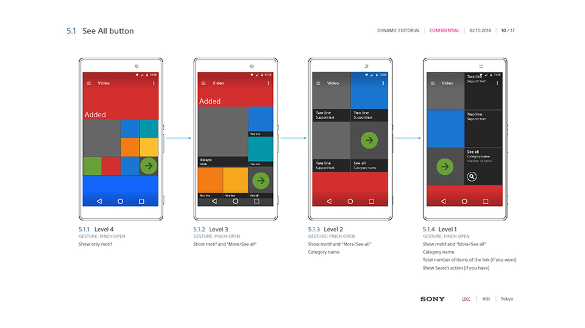

Project Overview
Design of media player apps for Android phones.

Responsibilities
Interaction design for the XPERIA Series Music/Album/Video apps.
Achievements
The unique pinch-action view layout change design influenced other companies' apps, and achieved 100 million active users in 2013.
Staff: Design Director: Maten Jonsson, Visual Designers: Peter Bjorneskog / Jacob Fyge / Masanori Matsushima, Interaction Designers: Par Stenberg / Hidehiro Komatsu / Masanori Matsushima
Tools: Sketch / Adobe Photoshop / Adobe Illustrator / Adobe AfterEffects